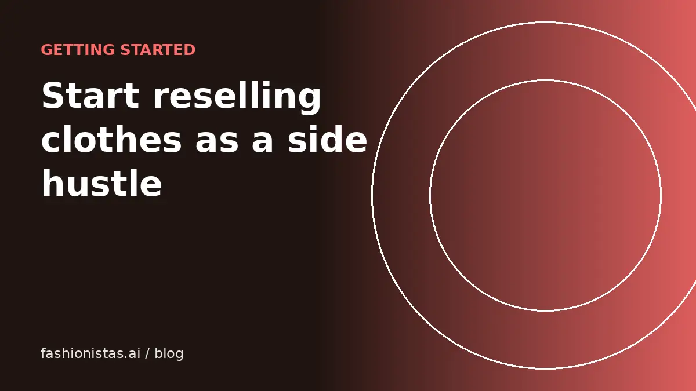

How to start reselling clothes: a beginner's guide

Reselling clothes is one of the easiest side businesses to start: you can begin with your own closet, a phone and a free app. It's also easy to waste time on items that won't sell. This guide takes you from your first listing to a repeatable routine, with honest expectations along the way.
Start with your own closet
Your closet is free inventory and the best place to learn.
- Pull out items you haven't worn in a year that are in good condition.
- Prioritize recognizable brands and quality materials. Our brand guide shows what tends to sell.
- Check each one: stains, pilling, missing buttons, broken zippers. Fix small issues or set aside items too damaged to sell.
- Wash and steam everything you plan to list.
Aim to list 10 to 20 items in your first couple of weeks. That's enough to learn what works without being overwhelming.
Pick one or two apps
Don't start on six apps. Pick the one or two that fit what you're selling:
- Mall and contemporary brands, athleisure: Poshmark, plus Mercari.
- Vintage, Y2K, streetwear: Depop, plus eBay.
- Low-priced everyday clothes: Vinted or Mercari.
Our app comparison explains the differences, and our fee guide lists what each charges, last checked Oct 2026. Once you're comfortable, crosslist to reach more buyers.
List well from day one
Good habits now save returns and unsold inventory later.
- Photos: daylight, plain background, cover shot plus labels, details and flaws. See how to photograph clothes.
- Title: brand, style, item, key detail, size. See how to write listings.
- Measurements: pit to pit and length for tops; waist, rise and inseam for pants. See the measuring guide.
- Price from sold comps, not retail. See how to price used clothes.
- Fill every field the app offers.
The fashionistas.ai listing tool speeds this up: photograph an item and it drafts the title, description and price, then adapts the listing for each app.
Set up a simple shipping station
- Poly mailers in two or three sizes
- Packing tape and scissors
- A digital scale
- A spot to store listed items, bagged and labeled so you can find them
When something sells, ship within a day or two. Fast shipping earns good reviews, and reviews earn sales. Our shipping guide covers packaging and labels.
Source more inventory
Once your closet is listed, you can buy to resell. Common sources:
- Thrift stores, especially on restock days and in different neighborhoods
- Estate, garage and yard sales
- Church and charity sales
- Clearance racks at outlets
- Friends and family who want closet clean-outs, sometimes on consignment
Before buying anything, check eBay or Poshmark sold listings on your phone for that exact item. A rough rule many resellers use: only buy if the likely sale price, minus fees and shipping, is at least three times what you pay. That margin covers the items that don't sell and the time spent.
Keep records from the start
Track each item in a spreadsheet: what it is, where you got it, cost, date listed, sale price, app, fees and shipping. It shows you what sells, what doesn't, and what you actually earn per item.
Records also matter for taxes. In the US, income from reselling may be taxable, and payment platforms and marketplaces send Form 1099-K to sellers above federal reporting thresholds, which have been changing in recent years. Selling personal items for less than you paid generally isn't a profit, but buying to resell is a business activity. Keep receipts and records, and check current IRS guidance or ask a tax professional for your situation.
A simple weekly routine
Consistency beats bursts. A routine that works for many part-time resellers:
- Daily (15 to 30 minutes): answer messages and offers, ship any sales, list one to three items.
- Weekly: a sourcing trip or closet sort, a batch photo session, and a check of anything that's been listed for 30+ days to refresh or reprice.
- Monthly: review your spreadsheet. Which brands and apps sold best? What sat? Adjust what you source.
Treat each step as a small habit and it fits around a job or school.
Mistakes beginners make
- Buying too much inventory too soon, before learning what sells.
- Pricing from retail instead of sold comps.
- Poor photos, taken at night or on a cluttered bed.
- Skipping measurements, which leads to questions, slow sales and returns.
- Shipping slowly, which hurts reviews.
- Not tracking costs, so you don't know whether you're making money.
Every one of these is fixable, and fixing them is most of what separates hobby sellers from consistent ones.
Growing from side hustle to business
Once you have steady sales, growing is about systems: a dedicated space, batch workflows, crosslisting to more apps, and reinvesting profits in better inventory. Some resellers specialize in a niche, such as vintage denim, outdoor gear or designer bags, where they build real expertise and loyal buyers. Others stay generalists and focus on volume. Your sales records will show you which direction suits you.
Tools that help
You don't need much: a phone, a tape measure, a scale, mailers and a spreadsheet. As you grow, a crosslisting tool saves the most time. The fashionistas.ai listing tool drafts listings from photos and adapts them per app, and the free shop setup helper walks you through signing in to each app once.
Selling locally
For bulky items like furniture-sized decor, heavy coats or bundles, local pickup through Facebook Marketplace or similar apps avoids shipping costs. Meet in public places, accept payment safely, and never ship to a "local" buyer who asks you to.
Realistic expectations
- Your first sales may take a week or two. That's normal.
- Not everything sells. Plan to donate, bundle or drop the price on items that sit for 60 to 90 days.
- Consistency matters more than volume. Listing a few items every day usually beats listing 50 once a month.
- Your margins improve as you learn what sells in your sizes, area and apps.
Reselling rewards patience and attention to detail. Start small, keep good records, and build from what works.
FAQ
How do I start reselling clothes with no money?
Start with your own closet. Choose one or two apps, list items in good condition with clear photos and fair prices, and use the earnings to source more inventory.
What is the best app for beginners to resell clothes?
Mercari and Vinted are simple to start on. Poshmark is good for brand-name womenswear, and Depop for vintage and streetwear. Many beginners start with one and add a second.
How much can you make reselling clothes?
It varies widely with time, sourcing and what you sell. Track every item's cost, sale price and fees to see your real earnings rather than relying on others' claims.
Do I have to pay taxes on reselling clothes?
Profit from buying to resell is generally taxable in the US, and platforms may send Form 1099-K above reporting thresholds. Keep records and check current IRS guidance or a tax professional.
How do I know what will sell?
Search the item on eBay or Poshmark with the sold filter turned on. Many recent sales at a good price means demand.